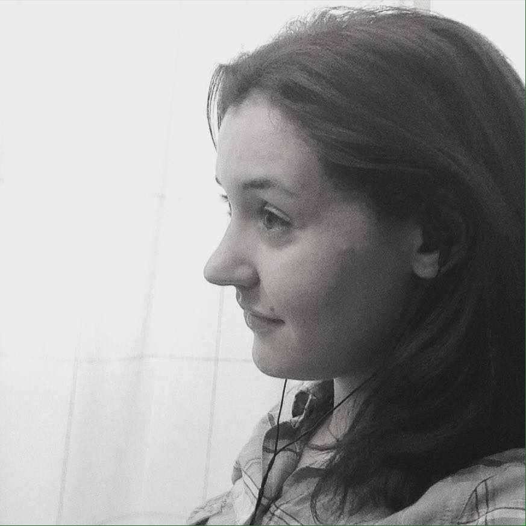

Emily Cibelli
Postdoctoral research associate
Department of Linguistics
Northwestern University
I am a postdoctoral researcher in linguistics. I do quantitative and experimental research in phonetics, psycholinguistics, and neurolingusitics, and have taught courses in phonetics and bilingualism.
Research Interests:
- The impact of categorization on cognitive representations
- Non-native phoneme acqusition
- The interaction of lexical and sub-lexical representations in production
- The neural representation of phonetic categories
- Cognitive and linguistic impacts of aging
- Speech motor control in psychotic disorders
Contact me:
Email: emily (dot) cibelli (at) northwestern (dot) edu
Office: 009 Swift Hall Annex
